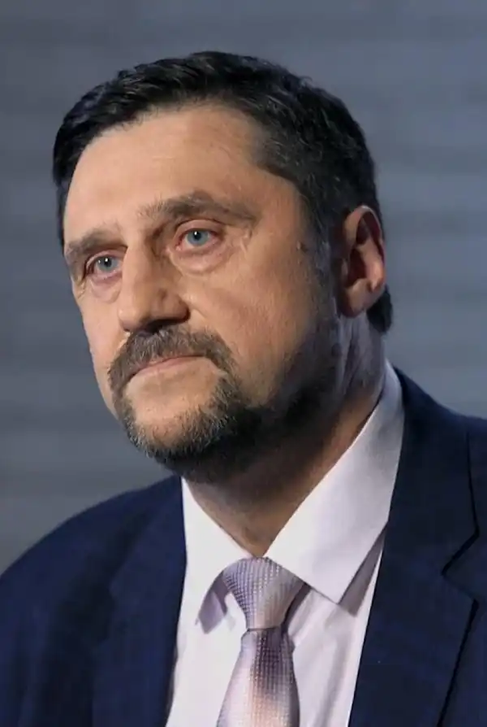

Сергій Пономаренко народився18 березня 1955 року в місті Магнітогорськ. Через деякий час батьки вирішують переїхати жити до Києва, де і облаштовувалися.
У шкільні роки Сергій активно відвідував різноманітні гуртки, серед яких був музичний клас, художня студія і дуже багато спортивних секцій, де він навчався боксу, водному поло і боротьбі. Коли Сергію виповнилося десять років, він написав свій перший літературний твір в жанрі фантастики. Письменницький дебют автора зайняв цілий шкільний зошит.
У 1973 році Сергій на два роки йде в армію. Після він вступає на факультет філософії в Київський університет ім. Т. Г. Шевченка. Період з 1980-х по 2000-і роки в його житті дуже насичений. Сергій одружується, ростить сина і будує успішну кар'єру, від директора власної фірми до кризового директора на виробництві. Він постійно перебуває у відрядженнях і захоплено займається східними єдиноборствами. Але навіть у такому інтенсивному ритмі життя Сергій не забував писати, хоча до великих романів справа не доходила. В кінці дев'яностих його оповідання стали публікувати в газетах, але здебільшого він діставав відмови. У 2001 році він пише повість "Сьома свіча", на яку звертає увагу "Клуб Сімейного Дозвілля". Єдина проблема — для самостійного твору, який можна випустити окремою книжкою, повість надто мала. Сергій береться розширити цю історію і вже через рік після публікації книга розходиться тридцятитисячним тиражем. З цього моменту почалася його літературна кар'єра. На рахунку Сергія Пономаренка десяток книг, серед яких: "Психостриптиз", "Санітар моргу, або Місячне затемнення в зимовому саду" і інші. Твори: "Лиса гора"; "Сьома свічка"; "Психостриптиз"; "Змія у траві"; "Санітар моргу, або Місячне затемнення в зимовому саду"; "Я буду любити тебе вічно"; "Лик Діви"; "Час Самайна"; "Відьмин пасьянс"; "Місія Діви"; "Касандра"; "Прокляття рукопису" "Відмін подарунок" "Прокляття скіфів" "Знак відьми"; "Колдовській круг"; "Відміна охота"; "Тенета бажань"; "Темний ритуал"; "Прокляття рукопису"; "Ключ до безсмертя"; "Пастка Вовчого замку"; "Формула безсмертя"; "Дзеркало з минулого"; "Вурдалак"; "Ляльковий будинок"; "Роковий дзвін"; "Чартер зі смертю"; "Зниклі. Таємниця гори"; "Чорне весілля"; "Оманливе коло".